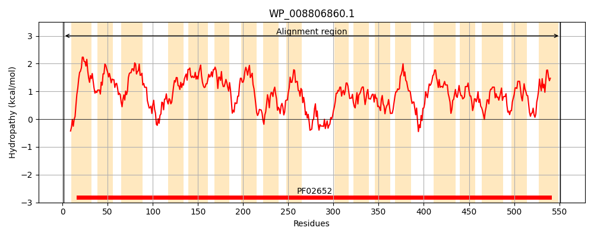
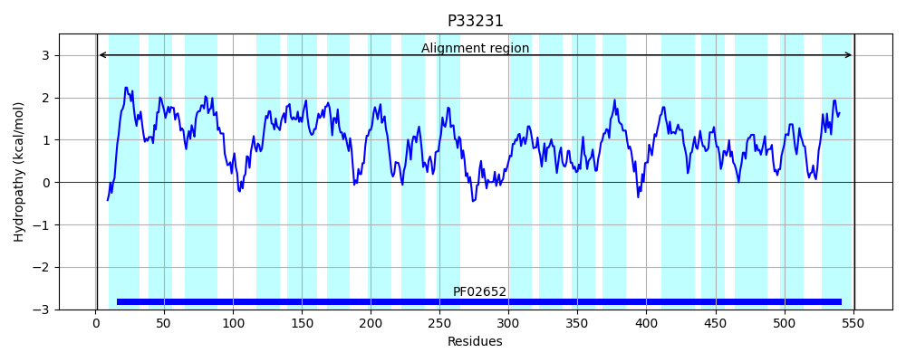
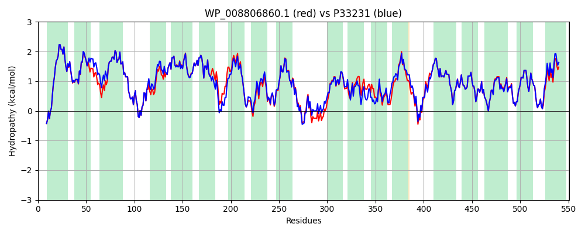

Hit Accession: P33231
Hit TCID: 2.A.14.1.1
Hit Description: gnl|BL_ORD_ID|9896 gnl|TC-DB|P33231|2.A.14.1.1 L-LACTATE PERMEASE - Escherichia coli.
Mach Len: 551
e:0.000000
Query TMS Count : 18
Hit TMS Count: 18
TMS-Overlap Score: 17.950000
Predicted Substrates:CHEBI:29805;glycolate, CHEBI:24996;lactate
BLAST Alignment:
Score: 2643 , Bit scores: 1022 bits, E-value: 0.0e+00, Alignment length: 551, Percentage identity: 93
Query: 1 MNLWQQNYDPAGNIWLSSLIASLPILFFFFALIKLKLKGYLAATWTVAIALAVALLFYKMPVDRALASVVYGFFYGLWPIAWIIIAAVFVYKISVKTGQFDIIRSSILSITPDQRLQMLIVGFSFGAFLEGAAGFGAPVAITAALLVGLGFNPLYAAGLCLIVNTAPVAFGAMGIPILVAGQVTGIDSFAIGQMVGRQLPFLTIIVLFWIMAIMDGWRGIKETWPAVMVAGGSFAIAQYLSSNFLGPELPDIISSLVSLVCLTLFLKRWQPVRIFRFGDIGASQVDMTLARTRYTAGQVIRAWSPFLFLTATVTLWSVPPFKALFAPGGAMYDFVINISVPFLDKMVARMPPVVSAATPYAAVYKFDWLSATGTAILFAALLSIVWLRMKPKDALTTFAGTLKDLALPIYSIGMVLAFAFISNYSGLSSTLALALAHTGHAFTFFSPFLGWLGVFLTGSDTSSNALFAALQATAAQQIGVSDILLVAANTTGGVTGKMISPQSIAIACAAVGLVGKESDLFRFTVKHSLIFTCMVGLITTLQAYVLTWMIP 551
MNLWQQNYDPAGNIWLSSLIASLPILFFFFALIKLKLKGY+AA+WTVAIALAVALLFYKMPV ALASVVYGFFYGLWPIAWIIIAAVFVYKISVKTGQFDIIRSSILSITPDQRLQMLIVGF FGAFLEGAAGFGAPVAITAALLVGLGF PLYAAGLCLIVNTAPVAFGAMGIPILVAGQVTGIDSF IGQMVGRQLPF+TIIVLFWIMAIMDGWRGIKETWPAV+VAGGSFAIAQYLSSNF+GPELPDIISSLVSL+CLTLFLKRWQPVR+FRFGD+GASQVDMTLA T YTAGQV+RAW+PFLFLTATVTLWS+PPFKALFA GGA+Y++VINI VP+LDK+VARMPPVVS AT YAAV+KFDW SATGTAILFAALLSIVWL+MKP DA++TF TLK+LALPIYSIGMVLAFAFISNYSGLSSTLALALAHTGHAFTFFSPFLGWLGVFLTGSDTSSNALFAALQATAAQQIGVSD+LLVAANTTGGVTGKMISPQSIAIACAAVGLVGKESDLFRFTVKHSLIFTC+VG+ITTLQAYVLTWMIP
Sbjct: 1 MNLWQQNYDPAGNIWLSSLIASLPILFFFFALIKLKLKGYVAASWTVAIALAVALLFYKMPVANALASVVYGFFYGLWPIAWIIIAAVFVYKISVKTGQFDIIRSSILSITPDQRLQMLIVGFCFGAFLEGAAGFGAPVAITAALLVGLGFKPLYAAGLCLIVNTAPVAFGAMGIPILVAGQVTGIDSFEIGQMVGRQLPFMTIIVLFWIMAIMDGWRGIKETWPAVVVAGGSFAIAQYLSSNFIGPELPDIISSLVSLLCLTLFLKRWQPVRVFRFGDLGASQVDMTLAHTGYTAGQVLRAWTPFLFLTATVTLWSIPPFKALFASGGALYEWVINIPVPYLDKLVARMPPVVSEATAYAAVFKFDWFSATGTAILFAALLSIVWLKMKPSDAISTFGSTLKELALPIYSIGMVLAFAFISNYSGLSSTLALALAHTGHAFTFFSPFLGWLGVFLTGSDTSSNALFAALQATAAQQIGVSDLLLVAANTTGGVTGKMISPQSIAIACAAVGLVGKESDLFRFTVKHSLIFTCIVGVITTLQAYVLTWMIP 551 | Protein Hydropathy Plots: |
|---|
|  |  |
Pairwise Alignment-Hydropathy Plot:
|
|---|
|  |